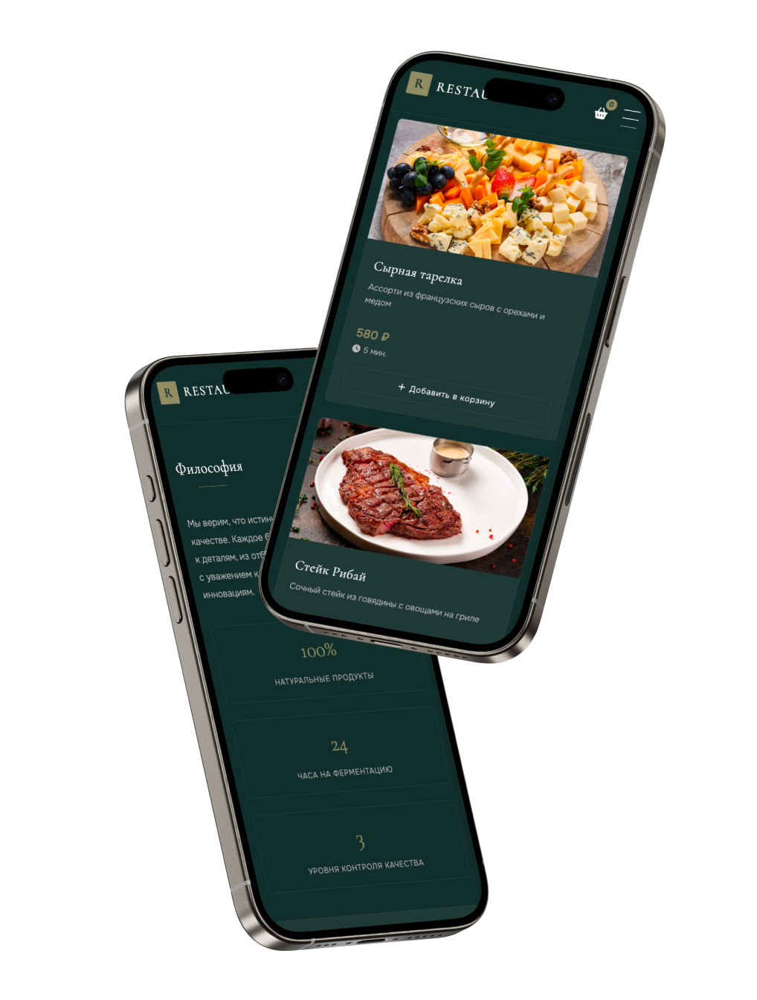
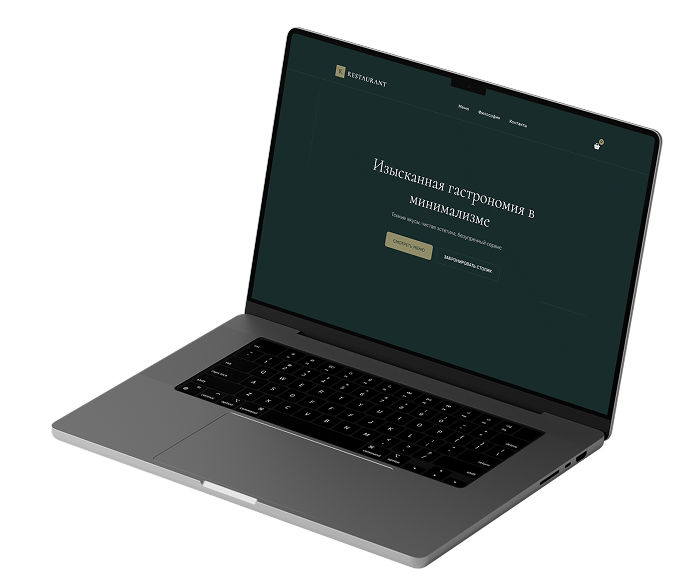
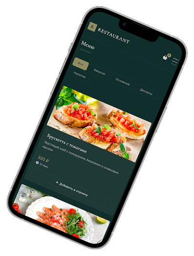
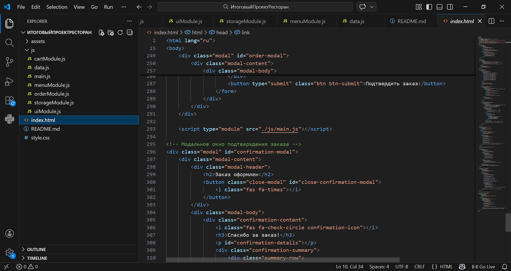
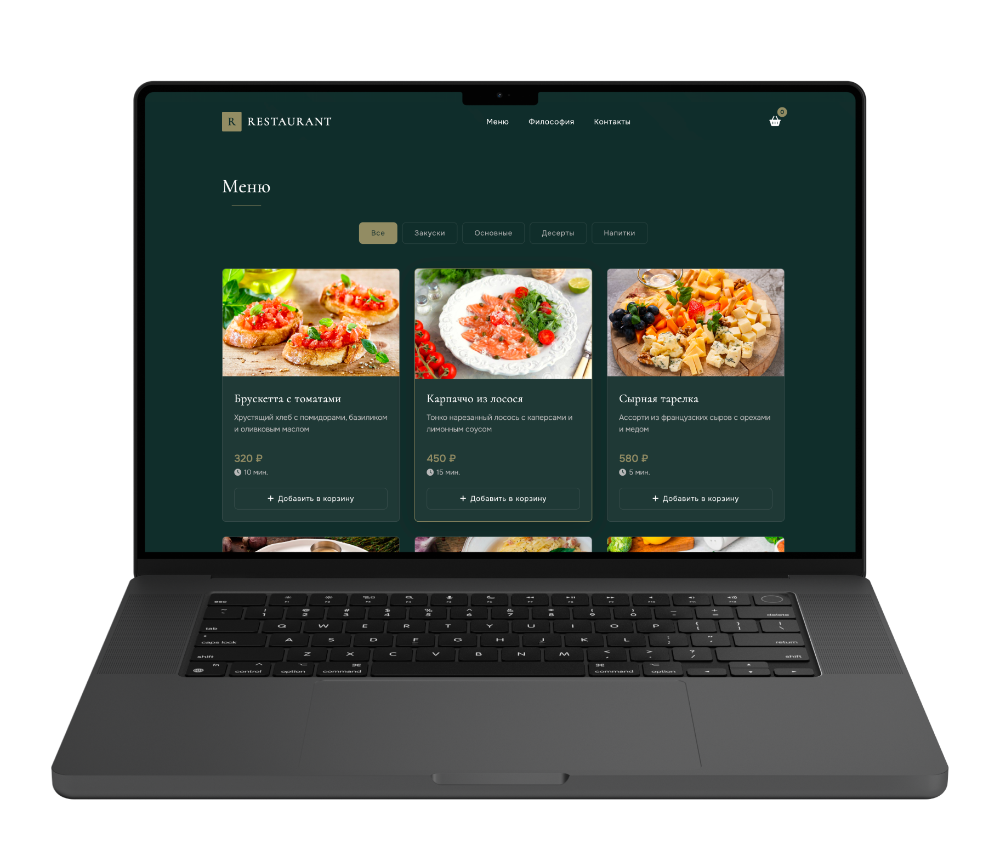
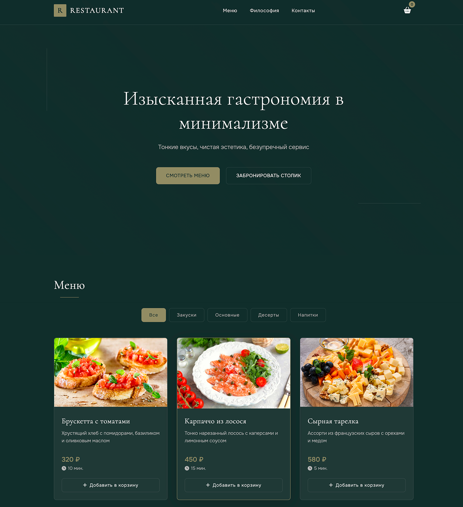

Проект представляет собой веб-сайт ресторана с современным минималистичным дизайном. На сайте пользователь может ознакомиться с меню, изучить философию ресторана, оформить заказ или забронировать столик.
Печать на сайт
Цель проекта — создать современный и удобный сайт для ресторана, который позволяет пользователям быстро ознакомиться с меню и оформить заказ. Интерфейс выполнен в минималистичном стиле с акцентом на визуальную подачу блюд. Основное внимание уделено удобству взаимодействия пользователя с меню и простоте оформления заказа.
Структура сайта построена таким образом, чтобы посетитель быстро находил нужную информацию.
Год реализации: 2026


В рамках проекта был разработан дизайн сайта и реализована его frontend-часть. Работа над проектом включала:
Сайт был реализован с использованием HTML, CSS и JavaScript. Особое внимание уделялось визуальной эстетике, анимации и удобству взаимодействия пользователя с интерфейсом.


